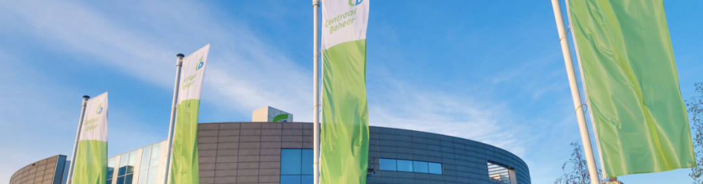

 13:30 - 15:30
13:30 - 15:30
 24 oktober 2024
24 oktober 2024
 HL 4.104
HL 4.104
 UX Gilde
UX Gilde
UX bij Centraal Beheer Achmea
Gastsprekers
UX Designers Roy en Ferdy komen vertellen over UX-Design bij Centraal Beheer
en geven ook nog een sessie Design Thinking met LEGO serious play.